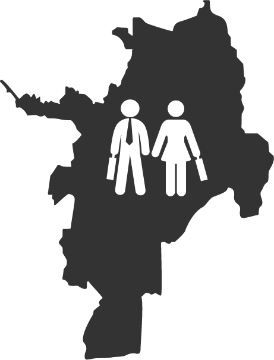
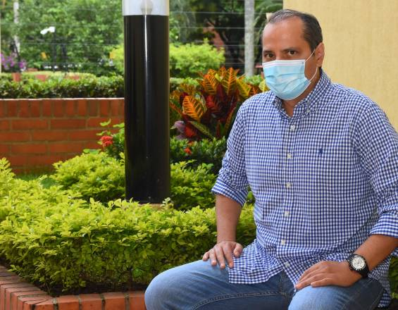
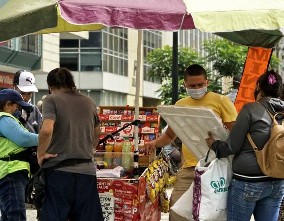
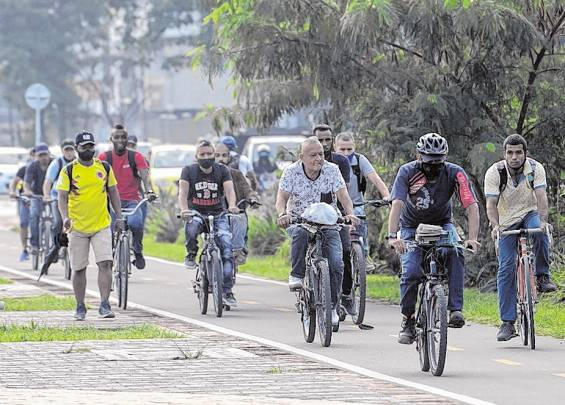
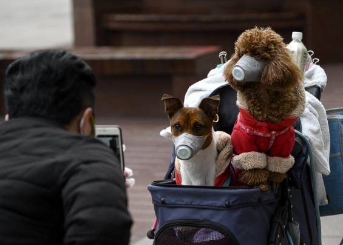
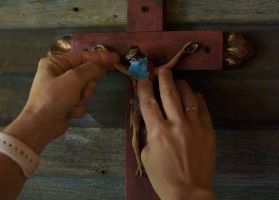

Primer año de la pandemia
por coronavirus en Cali
Reviva los momentos inolvidables del primer año del
covid-19 en la ciudad.
Reviva los momentos inolvidables del primer año del covid-19 en la ciudad.
Al cumplirse un año de la actual pandemia por el covid-19 en Colombia, actividades cotidianas como el ocio, el trabajo, la movilidad, e incluso la espiritualidad, cambiaron. Sin embargo, una de las principales conclusiones que deja esta emergencia sanitaria es que la vida es preciada y que en consecuencia, como lo advierten los expertos, se debe mantener como principio el cuidado mutuo y responsable.
-
De repente lo que era tan obvio en la sociedad y en la familia se volvió peligroso. Entonces el afecto se volvió distanciamiento y las relaciones, virtualidad. El consumo cayó, la familia se recogió y la cooperación se impuso como la única manera de sobrevivir.
- Viviana Barberena Nisimblat
Abogada y filósofa, con maestría en Administración Pública -
A lo largo de la pandemia se han dado recomendaciones de salud que son ciegas a las desigualdades y a las brechas que separan a poblaciones de una misma ciudad, por eso es difícil determinar cómo la emergencia sanitaria cambió la vida de quienes vivimos en la capital vallecaucana, porque hay condiciones que conducen a que ciertos sectores no puedan acatar normas de bioseguridad, puede ser por razones múltiples: culturales, sociales o económicas.
- Enrique Jaramillo Buenaventura
Director del Programa de Antropología de la Universidad IcesiNo olvidemos que medidas como el uso de mascarillas y gel desinfectante presupone economías que no siempre se tienen.
- Enrique Jaramillo Buenaventura
Director del Programa de Antropología de la Universidad IcesiEl estar alejados unos de otros se convierte quizá en el principal factor que altera las relaciones de los individuos, los colectivos y en general de la ciudadanía, pues impone nuevos retos que nos llevan a apostar por nuevas formas de sociabilidad, mediadas en nuevos espacios de convivencia y con dinámicas distintas que se centran en reveladoras formas de relacionarnos a partir de la idea del cuidado.
- Diana Patricia Quinaya Ocampo
Historiadora y Magíster en SociologíaEstas expresiones dejan ver la hipersensibilidad por compartir con el otro, por ayudar a los más necesitados, por promover la generosidad a pesar de que han sido circunstancias difíciles para todos.
- José González
Sacerdote, vicario para la Reconciliación y la Paz de la Arquidiócesis de CaliEs muy importante rescatar el valor de la ciencia, tomar en serio sus recomendaciones y además fomentarla como parte fundamental del desarrollo del ecosistema universal. El ser humano no puede darse el lujo de desatender sus llamados.
- Viviana Barberena Nisimblat
Abogada y filósofa, con maestría en Administración PúblicaEs necesario interiorizar el concepto de corresponsabilidad, así como crear normas y prácticas socioculturales que nos permitan vivir mejor y en armonía con los otros y con la naturaleza.
- Viviana Barberena Nisimblat
Abogada y filósofa, con maestría en Administración PúblicaHábitos de cuidado
Lavado frecuente de manos.
Uso de tapabocas y/o caretas.
Desinfección de espacios privados y comunes.
Uso de gel desinfectante y/o alcohol.
Distanciamiento social.
Protocolos de desinfección al ingresar de la calle a los hogares.
Consumo de bebidas y/o alimentos en lugares de confianza.
Compras y gestiones online.
Preferencia por espacios abiertos o con buena ventilación.
La mitad de los trabajadores
informales de Cali
está sin empleo en medio de la
pandemiaAl menos el 50 % de los trabajadores informales de Cali
tienen un miembro de su familia, incluyéndose, que ha
perdido su empleo en los últimos seis meses.La mitad de los trabajadores informales de Cali está sin empleo en medio de la pandemia
Al menos el 50 % de los trabajadores informales de Cali tienen un miembro de su familia, incluyéndose, que ha perdido su empleo en los últimos seis meses.
"Salí de la clínica el 23 de
diciembre, así que pasé el 24 y el
31 aislado, en mi casa. Requerí
apoyo de oxígeno hasta la primera
semana de enero. Ahora ya puedo
hacer ejercicio y recorridos
más largos".Galería de imágenes
-

Dado el golpe económico sufrido por los vendedores ambulantes en la ciudad, que son más de 30.000, el gremio ha solicitado a nivel local, regional y nacional una renta básica mientras se reactiva la economía en lo corrido de este año.
-

Durante la pandemia el uso de la bicicleta y los recorridos a pie han sido más recurrentes, según el Observatorio de Políticas Públicas de la Universidad Icesi.
Hasta los 'peluditos' usaron elementos de protección personal, si bien las autoridades sanitarias han asegurado que, aunque perros y gatos pueden tener carga viral, la misma es inofensiva en ellos y no se transmite a humanos.
Muchos se aferraron a la fe para poder afrontar la emergencia.
Uno de los elementos más comprados fue el papel higiénico, a pesar de no ser de primera necesidad.
¿Cómo la pandemia le cambió
la vida a los caleños?Este mes se cumple un año desde la identificación del primer
caso de covid-19 en Colombia, hecho que dio a los contagios en
el país y todas las medidas, restricciones y consecuencias que se
derivaron de ello. Esto reflexionan caleñas y caleños sobre este
año en sus vidas.La mitad de los trabajadores informales de Cali está sin empleo en medio de la pandemia
Al menos el 50 % de los trabajadores informales de Cali tienen un miembro de su familia, incluyéndose, que ha perdido su empleo en los últimos seis meses.